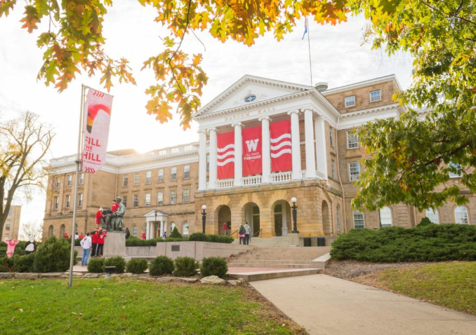

University of Wisconsin–Madison
I’m currently a third-year student at UW–Madison majoring in Information Science— building a foundation in data, systems, and security while growing as a builder and problem-solver. My coursework and projects deepen my focus on cybersecurity and using technology to protect people.
